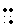
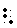
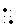
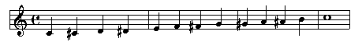
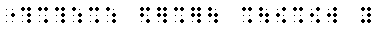

|
Accidentals in music are the sharps, flats, and naturals that are placed in front of a single note to change its pitch. If you recall from the previous reading on key signatures, each piece of music is written with a "generic" set of notes that are sharped or made flat. For example, in the the key of G, the F is always sharp, unless an accidental changes it.
You should recall the braille notation of sharps, flats, and naturals from the reading on key signatures:
Sharp: 
Flat: 
Natural: 
A simple scale shows how to use this notation:

|